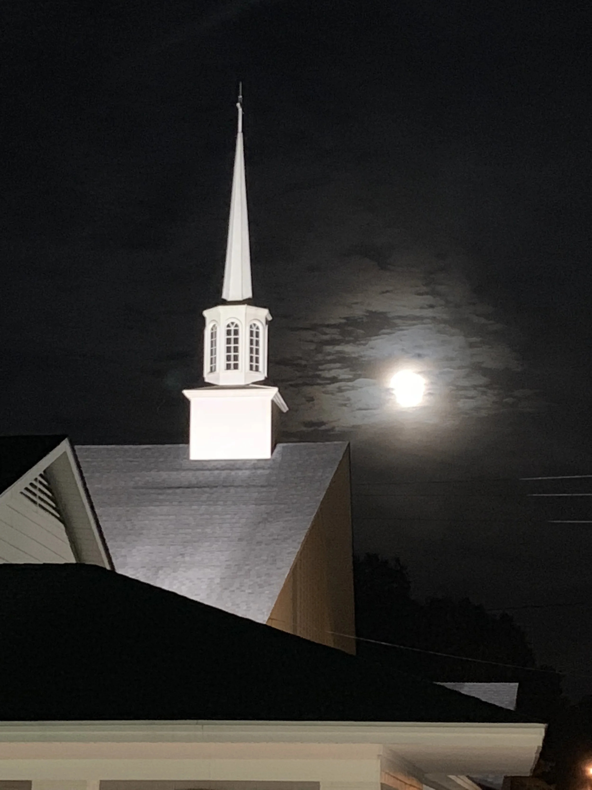

Saraland Baptist Church
A Church That Exalts Jesus and Loves People — you are welcome here, just as you are.
“Therefore, if anyone is in Christ, the new creation has come: The old has gone, the new is here! All this is from God, who reconciled us to himself through Christ and gave us the ministry of reconciliation.” 2 Corinthians 5:17–18

A Friendly, Loving Family of Faith
We are a congregation in Saraland, Alabama that strives to be friendly and loving, with a heart to help every person strengthen their relationship with Jesus Christ. God's Word is the foundation of everything we do.
We desire to be a church that exalts Jesus and loves people — and we'd love for you to be a part of our family. Whether you're a lifelong believer or simply exploring faith, you are welcome here.
Learn MoreOur Ministries
From Sunday morning Bible Classes to outreach partnerships around the world, there is a place for everyone to serve and grow.
Bible Classes
Classes from nursery through adult every Sunday morning, teaching Scripture in a relevant and practical way.
Choir
Worship through music, with monthly special presentations and seasonal performances throughout the year.
Youth Ministries
Sunday morning classes and year-round activities to encourage young people in their walk with the Lord.
Community Outreach
Partnerships with Kendrick Ministries and Operation Christmas Child to serve both locally and globally.
You Can Make A Difference
God wants us to use our gifts and abilities to serve Him. We believe every person has a role to play — prayerfully consider how you might be part of what God is doing here.